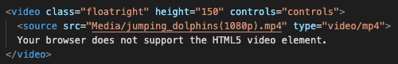

Home
Week 5
Question 4: Ashley wants to make her Webpages HTML5-complaint and eliminate the need for site visitors to download plug-ins to view her video files. What can Ashley?
Incorporate the < video > element in her Webpages
Your browser does not support the HTML5 video element.
